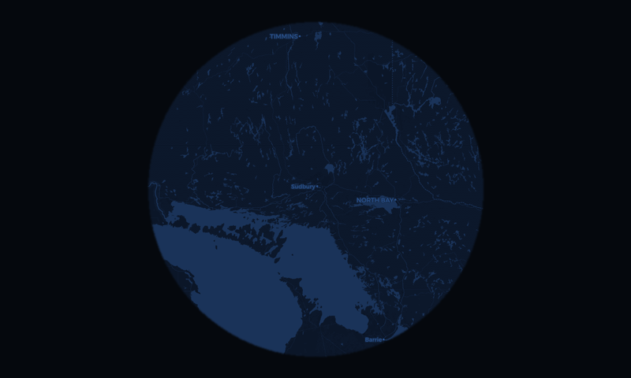
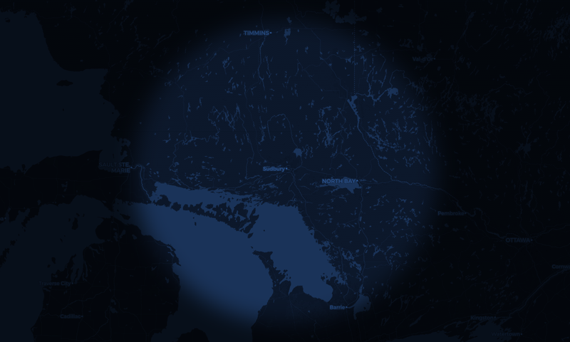
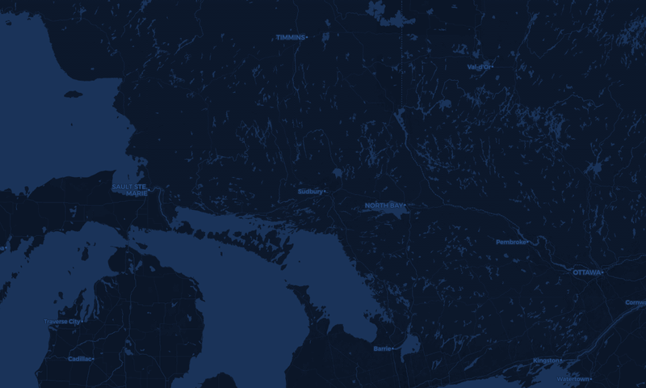

Full fidelity this time: real CARTO tiles fetched for 51.4700 / −0.4543 at your 250 km range, the real Air Canada logo the device caches, and real Inter + JetBrains Mono. Includes your three changes — Home removed, weather moved into the card so nothing floats over the map, and the clock relocated. Two map treatments to compare.
The circle means something: it is the edge of what your receiver can see. Chrome
sits on ink, so cards stay fully opaque and the renderer keeps its
LV_COVER_RES_COVER fast path.

Weather now lives in the card. Top centre is clear, so the compass N cannot be occluded. Clock and gear share the bottom band with the range stepper.
Same layout, but the map runs edge to edge and is dimmed to 30% outside the coverage circle. The dimming is the whole trick: it keeps the range affordance the circle carries, keeps text legible, and — because the cards sit over the dark region — lets them stay opaque, so this costs no translucency penalty.

Map runs to all four edges; 30% outside the circle with a soft falloff.

Uniform brightness. The circle stops meaning anything, the corners compete with
the targets, and any card over it needs translucency — which costs the
LV_COVER_RES_COVER fast path.
| Factor | Disc-only (A) | Full-bleed (B) | Notes |
|---|---|---|---|
| Map buffer, PSRAM | 424² = 360 KB | 800×480 = 750 KB | Affordable — ~5 MB PSRAM free. Double-buffered it is 1.5 MB, still fine. |
| Tiles per refresh | 9 (3×3) | 20 (5×4) | Each is a TLS fetch. Bursty, not steady — only on range or location change — but it lands on the exact subsystem that is currently draining the heap. |
| Card translucency | Not needed | Not needed if dimmed | This is the deciding detail. Cards sit over the 30% region, so they stay
LV_OPA_COVER and keep the LV_COVER_RES_COVER fast path. Undimmed
(B′) they would need translucency and every 1 Hz label would recomposite the screen root. |
| Range affordance | Explicit | Preserved by the dim | The circle stays the edge of receiver coverage — which is true, not decorative. That is the argument for dimming rather than a uniform wash. |
| Text legibility | Cards on flat ink | Cards on dimmed map | Measured floor rises from Y 0.002 to ~0.02; card fill is Y 0.015 flat, so contrast holds. Scope labels keep their 4 px text shadow. |
| Redraw cost per frame | Unchanged | Unchanged | The background is a static image either way; only the blip rects invalidate. |
My recommendation: B, with the dim. It buys most of the visual ambition at essentially no render cost, because the dimming is what lets the cards stay opaque. The one real price is 20 tile fetches instead of 9 on a range change — worth paying, but worth paying after the heap drain is fixed, not before. B′ (uniform brightness) I would reject: it looks the most impressive in a screenshot and is the worst instrument of the three.